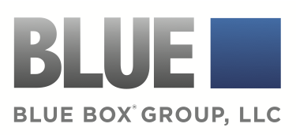
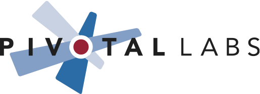

Gold Sponsors

Blue Box Group is a premier Rails hosting provider with managed
hosting and flexible cloud, dedicated, and hybrid solutions. Our
experts bring top-tier operations and configuration support during
deploys, migrations, and maintenance, allowing you to focus on writing
great code. We're committed to providing the best possible
infrastructure for your application, period.
We've worked in the Rails community since 2006 and are devoted to
maintaining close relationships with our partners. Since the
beginning, we've stuck to our roots: we're the backend systems experts
to compliment your team.
We combine our proprietary cloud operating system with dedicated high
performance database servers to maximize performance and scalability.
There's no need to re-architect applications to work around the
limitations of a platform.
With full SSH and root access, you can pick your application stack, or
work with our engineering team to implement our recommendation. The
important part is that the choice is yours.
You can get started with a single server for a staging site, or a work
with us to build a custom cluster for your production environment
right off the bat.
Silver Sponsors

Efficiency 2.0 is a leading energy efficiency software
and program administration company that helps utilities meet ambitious energy efficiency goals
by increasing customer engagement. We leverage behavioral psychology and consumer marketing best
practices through our Personal Energy Efficiency Rewards (PEER) program to deliver efficiency
and customer engagement benefits for our utility partners.

Pivotal Labs s a recognized leader in agile, rails, and
mobile development. We've been building high reliability systems for clients for over 20 years,
and our Rails practice has delivered more than 100 client products since its launch less than
five years ago. Long a leader in the Agile development world, we've been applying agile
techniques to accelerate development, reduce risk, and increase responsiveness to market trends
for startups and enterprises alike. And Pivotal doesn't just deliver a great product, we also
equip our clients to execute on their own, giving them the tools and techniques they need to
continue to excel.
Our Jolt award winning project management tool, Pivotal Tracker, has become the industry standard
in the Rails development world, and we invite you to use it, if you're not already.
We're always looking for brilliant Rails developers to join our talented team in San Francisco,
New York, and Boulder campuses. If you want to share your knowledge while learning from others,
work sustainably, and work on some serious projects, come work for us or with us! Apply now:
jobs@pivotallabs.com
We're excited to again sponsor GoRuCo New York. We look forward to all the great stuff that
will come out of it.